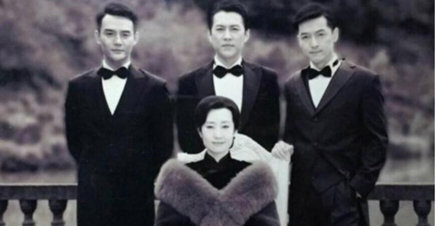

胡歌靳东王凯合体！我们为何爱看明家兄弟
2017.02.15 10:00发布：央粉APP
《伪装者》里，明诚是那个从来不惹麻烦，只负责处理麻烦的人，可是在故事之外，走红后的王凯，却是明家三兄弟里故事最多的那个。公众宠着他，用各种力挺确保这个不会混娱乐圈的老干部，在娱乐圈这个心机boy人精混杂的地方，一直混的下去。
当靳东、胡歌、王凯，或者说，是名楼、明台、明诚同时站在春晚主舞台上合唱，会完成又一轮朋友圈刷屏吗？这个问题，似乎已经提前就有了答案。 在中国影视圈的丛林里，再好的枝芽，也需要一个机会见着阳光，《伪装者》就像一棵大树，明家三兄弟像是从大树上长出的三枝藤曼，藤曼曾经紧紧缠绕在一起奋力向上生长碰到了阳光，又终究朝着不同的方向生长去。

胡歌的脚步则明显地慢下来。之前胡歌曾多次接受采访时表示，自己会“休息一段时间”。我们以为他做不到，但事实证明，他做到了。据说胡歌拒绝了包括杜琪峰导演在内的众多戏约，预计今年将去国外修习英文和电影导演课程。 《伪装者》里，明诚是那个从来不惹麻烦，只负责处理麻烦的人，可是在故事之外，走红后的王凯，却是明家三兄弟里故事最多的那个。
《欢乐颂》中的超好看医生，《放弃我抓紧我》里的超好看总裁，《如果蜗牛有爱情》中的超好看刑警队长，王凯的演技依然在线，可是却再没有遇到一个可以充分发挥演技的角色，即使是正午阳光的剧，也在越来越突出他的身手和脸部特写，在正午阳光之外，其他导演的任务，似乎就是把王凯拍得好看一些，再好看一些，然后，收视率自然就爆了。